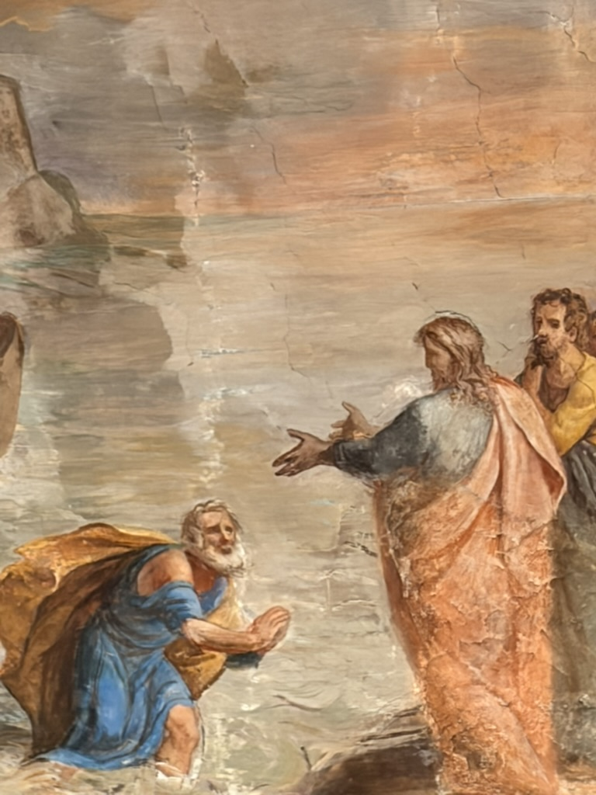
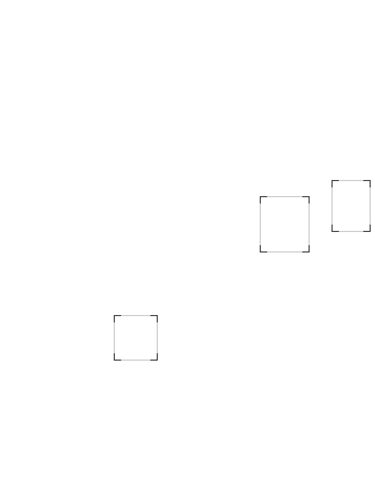

02 / Atmosphere
Soft ground.
Broad, quiet surfaces. Warm neutrals carry the page; the painting supplies the texture.
Fresco study / October 2026
Weathered plaster, warm pigment, and a quiet blue interruption.
Perception layer
Three face boxes. Dark umber linework, open corners, and a faint perimeter preserve the painted gestures.
Manually drawn artistic annotations.


02 / Atmosphere
Broad, quiet surfaces. Warm neutrals carry the page; the painting supplies the texture.
03 / Material
Terracotta and ochre give the image warmth. Fine rules echo the fragile plaster surface.
04 / Accent
One restrained blue accent creates emphasis among the earth tones.
05 / Typography — Anton
Inter / Body & captions
An editorial frame for engineering work.
Large condensed headlines meet calm, readable prose. Numbered captions and generous spacing leave room for real project artifacts.
Composition cue
Keep the photograph intact. Set essential text on a quiet surface beside it. Carry the image palette through the eventual projects page.